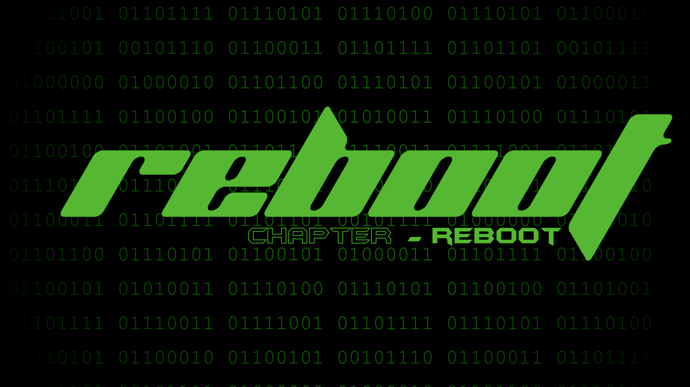

REBOOT Chapter 1 Finished
Hello Everybody, This is my first blog, today we finally finished progress on chapter 1 of Reboot, but it is still incomplete.
It is finished in blocking and UI. Saving and loading is still unfinished. UI Health, Combo and That is Done.
Save File System is done and you can load custom Save Files after beating the game and also you can import mods using our RebootModLibrary App.
It is not out yet, but that is also being prototyped.
Our Player Movement Controller is finished and we have decided that there is the Linear Story Quests and Linear Side Quests.
Side Quests are Optional but can reward you.
We have decided that you can get Gold via killing enemies, Completing Quests and progressing.
With Gold you can open Chests for weapons, but you can still get weapons without opening Chests.
— BCS [Akshat]